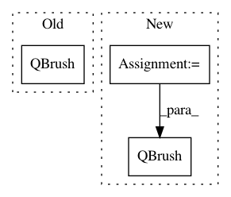

43a0e49eba55ba6880c402d9f99d707128e953dc,Orange/widgets/visualize/owtreeviewer.py,OWTreeGraph,toggle_node_color_reg,#OWTreeGraph#,399
Before Change
colors = self.scene.colors
for node in self.scene.nodes():
node_mean = self.tree_adapter.get_distribution(node.node_inst)[0][0]
node.backgroundBrush = QBrush(colors[fact * (node_mean - minv)])
else:
nodes = list(self.scene.nodes())
variances = [self.tree_adapter.get_distribution(node.node_inst)[0][1]
for node in nodes]
After Change
colors = self.scene.colors
for node in self.scene.nodes():
node_mean = self.tree_adapter.get_distribution(node.node_inst)[0][0]
color = colors.value_to_qcolor(node_mean, minv, maxv)
node.backgroundBrush = QBrush(color)
else:
nodes = list(self.scene.nodes())
variances = [self.tree_adapter.get_distribution(node.node_inst)[0][1]
for node in nodes]
In pattern: SUPERPATTERN
Frequency: 3
Non-data size: 3
Instances
Project Name: biolab/orange3
Commit Name: 43a0e49eba55ba6880c402d9f99d707128e953dc
Time: 2020-02-06
Author: janez.demsar@fri.uni-lj.si
File Name: Orange/widgets/visualize/owtreeviewer.py
Class Name: OWTreeGraph
Method Name: toggle_node_color_reg
Project Name: biolab/orange3
Commit Name: e139774089d7a49df522f9bbb9e942ce3b3c325e
Time: 2020-02-06
Author: janez.demsar@fri.uni-lj.si
File Name: Orange/widgets/unsupervised/owdistancematrix.py
Class Name: DistanceMatrixModel
Method Name: color_for_label
Project Name: biolab/orange3
Commit Name: b0b5129489369a88e730c1ff349f80e58a220b52
Time: 2014-12-05
Author: janez.demsar@fri.uni-lj.si
File Name: Orange/widgets/classify/owclassificationtreegraph.py
Class Name: ClassificationTreeNode
Method Name: paint